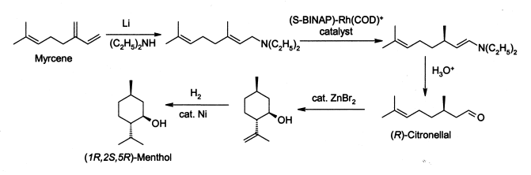
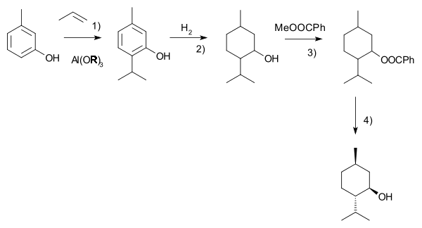

Production of Menthol as with many widely used natural products, the demand for menthol greatly exceeds the supply from natural sources. In the case of menthol it is also interesting to note that comparative analysis of the total life-cycle costs from a sustainability perspective has shown that production from natural sources actually results in consumption of more fossil fuel, produces more carbon dioxide effluent and has more environmental impact than either of the main synthetic production routes.Menthol is manufactured as a single enantiomer (94% e.e.) on the scale of 3,000 tonnes per year by Takasago International Corporation.The process involves an asymmetric synthesis developed by a team led by Ryōji Noyori, who won the 2001 Nobel Prize for Chemistry in recognition of his work on this process:
The process begins by forming an allylic amine from myrcene, which undergoes asymmetric isomerisation in the presence of a BINAP rhodium complex to give (after hydrolysis) enantiomerically pure R-citronellal. This is cyclised by a carbonyl-ene-reaction initiated by zinc bromide to isopulegol, which is then hydrogenated to give pure (1R,2S,5R)-menthol. Another commercial process is the Haarmann Reimer process (after the company Haarmann and Reimer, now part of Symrise). This process starts from m-cresol which is alkylated with propene to thymol. This compound is hydrogenated in the next step. Racemic menthol is isolated by fractional distillation. The enantiomers are separated by chiral resolution in reaction with methyl benzoate, selective crystallisation followed by hydrolysis.
Racemic menthol can also be formed by hydrogenation of pulegone. In both cases with further processing (crystallixative entrainment resolution of the menthyl benzoate conglomerate) it is possible to concentrate the L-enantiomer, however this tends to be less efficient, although the higher processing costs may be offset by lower raw material costs. A further advantage of this process is that D-menthol becomes inexpensively available for use as a chiral auxiliary, along with the more usual L-antipode.